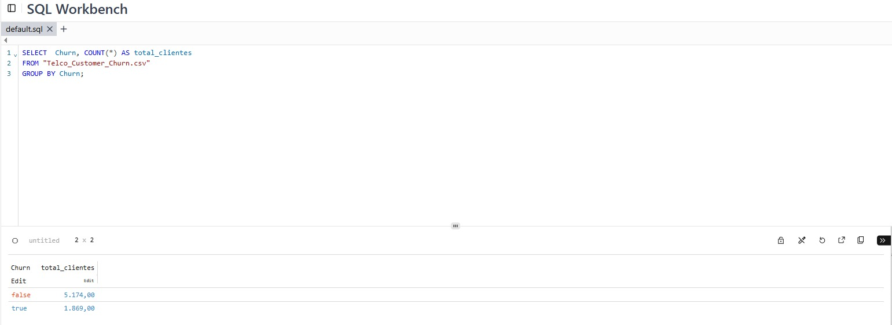
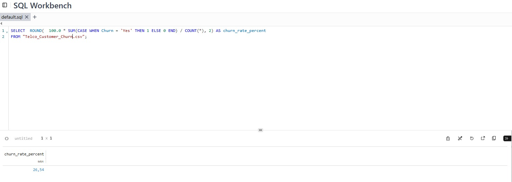
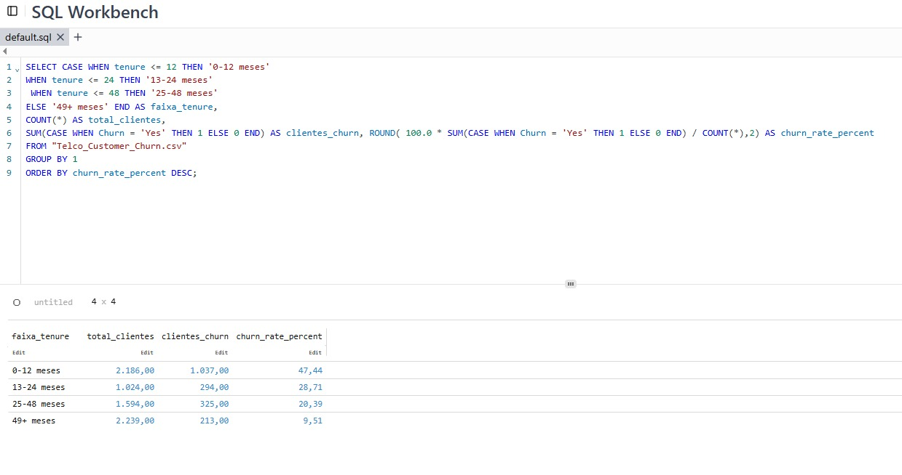

Behind the churn analysis: data source, SQL exploration, DAX measures and the analytical process used to build the dashboard.
The dataset used in this project was the public Telco Customer Churn dataset, available on Kaggle. It contains customer-level information for a telecom business, including contract type, tenure, subscribed services, payment method, monthly charges and churn status.
I chose this dataset because it allows a complete retention analysis. It includes enough variables to investigate customer profile, behavior, service relationship and possible factors associated with cancellation.
View dataset on Kaggle Back to caseThe analysis was conducted in stages. First, I measured the size of the problem by looking at churn distribution and the overall churn rate. Then, I segmented customers by key variables such as contract type and tenure to identify where churn was most concentrated.
To understand the overall behavior of the dataset, I aggregated customers by churn status. This query shows how many customers remained active and how many discontinued their services.
SELECT
Churn,
COUNT(*) AS total_customers
FROM "Telco_Customer_Churn.csv"
GROUP BY Churn;

This step helped quantify the problem before moving into more detailed analysis. The dataset showed 5,174 active customers and 1,869 churned customers.
After identifying the number of churned customers, I calculated the overall churn rate. This metric shows the proportion of customers who canceled in relation to the total customer base.
SELECT
ROUND(
100.0 * SUM(CASE WHEN Churn = 'Yes' THEN 1 ELSE 0 END) / COUNT(*),
2
) AS churn_rate_percent
FROM "Telco_Customer_Churn.csv";

The result was an overall churn rate of approximately 26.5%, indicating that more than one quarter of customers in the dataset had discontinued their services.
To understand when churn was most critical in the customer journey, I grouped customers by tenure. This helped identify whether cancellations were more common among new or long-term customers.
SELECT
CASE
WHEN tenure <= 12 THEN '0-12 months'
WHEN tenure <= 24 THEN '13-24 months'
WHEN tenure <= 48 THEN '25-48 months'
ELSE '49+ months'
END AS tenure_group,
COUNT(*) AS total_customers,
SUM(CASE WHEN Churn = 'Yes' THEN 1 ELSE 0 END) AS churned_customers,
ROUND(
100.0 * SUM(CASE WHEN Churn = 'Yes' THEN 1 ELSE 0 END) / COUNT(*),
2
) AS churn_rate_percent
FROM "Telco_Customer_Churn.csv"
GROUP BY 1
ORDER BY churn_rate_percent DESC;

The analysis showed that customers within their first 12 months had a churn rate close to 47%, making this the most critical group. This result supported the recommendation to prioritize onboarding and early engagement.
In Power BI, I created simple and reusable measures to support the main dashboard indicators. The goal was to keep the model clean, avoid unnecessary calculations and focus only on what was used in the visuals.
Churn Flag = IF('telco_customer_churn'[Churn] = "Yes", 1, 0)
Total Customers = COUNTROWS('telco_customer_churn')
Churned Customers = SUM('telco_customer_churn'[Churn Flag])
Churn Rate = DIVIDE([Churned Customers], [Total Customers])
Active Customers = [Total Customers] - [Churned Customers]
In addition to the measures, I created segmentation columns to make the visuals easier to interpret and to transform continuous variables into business-friendly groups.
Tenure Group =
SWITCH(
TRUE(),
'telco_customer_churn'[tenure] <= 12, "0-12",
'telco_customer_churn'[tenure] <= 24, "13-24",
'telco_customer_churn'[tenure] <= 48, "25-48",
"49+"
)
Charge Group =
SWITCH(
TRUE(),
'telco_customer_churn'[MonthlyCharges] < 35, "Low",
'telco_customer_churn'[MonthlyCharges] < 70, "Medium",
"High"
)
The project followed a progressive analytical logic: first measure the problem, then understand where it was concentrated, and finally propose actions. This approach helped avoid a purely visual dashboard and led to an analysis connected to business decisions.
The most relevant finding was that churn was not evenly distributed. It was mainly concentrated among month-to-month customers, new customers, and groups with higher sensitivity to pricing or customer experience.
View full dashboard View full case